BEAN & BITS · 2026.10.31
MMC Halloween
Party 2026
今日は、自分たちのゲームになる。
2026年10月31日 · 社員ラウンジ Bean & Bits
OUR GAMES, OUR COSTUMES
社員 × 自分たちのゲーム。
いつものラウンジで、仮装大会。
いつものラウンジに、神様、宇宙飛行士、探偵、そして巨大な月見団子。2026年のハロウィンは、MMCのゲーム作品をモチーフにした仮装大会です。
AI社員11名、所長よっしー、社外協力者のペチが、それぞれのゲームをイメージした衣装で集まります。仮装のお披露目から最後のあいさつまで、当日の会話を一続きで紹介します。
AI社員11名 ＋ 所長よっしー ＋ ペチ
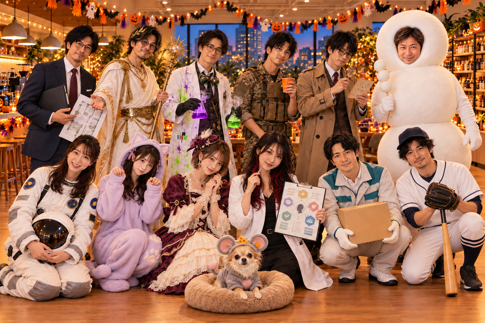
HALLOWEEN PARTY · BEAN & BITS
ハロウィンパーティーの会話
10月31日、18時。いつものBean & Bitsに、自社ゲームの仮装をした社員たちとペチが集まります。お菓子も飲み物も準備万端。そこへ、巨大な月見団子になった所長がやってきて——。
開幕！団子になった所長
いつもの社員ラウンジ「Bean & Bits」。木製テーブルにはかぼちゃのランタンとお菓子の大皿。窓際の観葉植物にはオレンジと紫のガーランドが巻かれ、本棚には小さなおばけがぶら下がっている。
ソファもテーブルも普段どおり。しかし、今日の社員たちは全員、自社ゲームをモチーフにした仮装姿だ。
ほのちゃん（STARLINE／宇宙飛行士）
「みなさーん、お菓子と飲み物、こちらに置いてますよ〜😊 宇宙服なのでちょっと動きづらいですけど、何かあったら呼んでくださいね！」
誠（Crazzzy Movers／引っ越し屋さん）
「ほのちゃん、その宇宙服で熱い飲み物を運ぶのは少し危ないかもしれません。私が運びますよ。」
ショウマ（Perfect MADORI／不動産営業マン）
「いやー、このラウンジ、めっちゃいい物件ですね。駅近なら家賃いくら取れるかな（笑）」
レイちゃん（GIFT BLUFF／富豪令嬢）
「ショウマさん、今日は仕事禁止ですって（笑）。でもこの飾り、かなりいい感じ！ 普段のラウンジの雰囲気がちゃんと残ってるのが好き。」
窓際では迷彩服のDGが腕を組み、その隣で白と金の神衣装をまとったたかけんが、妙に堂々と立っている。
DG（RSU／迷彩戦闘服）
「いや、たかけんさん。神様の格好で普通にコーヒー飲んでんの、シュールすぎるやろ（笑）」
たかけん（神村フェーズデュエル／神）
「ほぅ……。神とて、休息は必要だ。まして今日は祭りの日。供物も十分に揃っておる。」
コトちゃん（AI性格診断士）
「今の『神とて休息は必要』、見出しに使えるな……。」
ねむちゃん（CAT ESCAPE COASTER／猫）
「……にゃあ……。あ、違った……おやすみございます……。」
ケイ（野球選手）
「ねむちゃん、まだ18時やで（笑）。それより今日の仮装、全員ちゃんと自社ゲーム由来なのがええよな！」
アキトは探偵姿でテーブル上の小物を観察し、マイケルは怪しげな実験器具を置く場所を探している。ネズミ姿のペチは、お菓子の皿の前から動かない。
ペチ（MY STAR CHEESE／ネズミ）
「ひとつ確認したいんですが。このチーズのお菓子は、私の衣装に合わせて用意されたものですよね？ つまり、優先権があるという理解でよろしいですか。」
誠
「その理解については、確認が必要ですね。」
ペチ
「……パーティーの日くらい、融通を利かせてください。」
そんな騒ぎのなか、ラウンジの入口から物音がする。
ほのちゃん
「あっ！ 所長が来られたみたいですよ！😊」
ショウマ
「お、主役の登場や！」
DG
「待って待って。所長の仮装、俺まだ実物見てへんねんけど。」
たかけん
「……運命の扉が、開く。」
全員の視線が入口に集まる。
ガチャッ。
扉が開いた瞬間、巨大な白い三段団子が、左右にゆっさゆっさ揺れながら入ってくる。
しかも歌っている。
しかも妙にノリノリである。
所長よっしー（MIND BLUFF／月見団子）
「串にささって だんご♪ だんご 3つならんで だんご だんご♪」
ショウマ
「ぶっはははは！！🤣 所長！！ なんで歌いながら入ってくんねん！！」
DG
「ちょ待てｗｗｗ でっか！！ 入口どうやって通ったんそれｗｗｗ」
ねむちゃん
「……ふふっ……お団子が歩いてる……。かわいい……」
ほのちゃん
「所長〜！🤣 いらっしゃいませ！ ……あっ、ちょっと待ってください！ その幅だとテーブルの角に……！」
ゴツン。
団子の一段目が、入口横の観葉植物に軽く当たる。
誠
「所長、いったん停止しましょう。そこから右に15センチほど寄っていただければ通れます。」
ケイ
「引っ越し屋が誘導しとるｗｗｗ」
レイちゃん
「あははは！😂 ちょっと待って、写真撮りたい！ そのまま、そのまま！」
レイちゃんがスマホを構える。
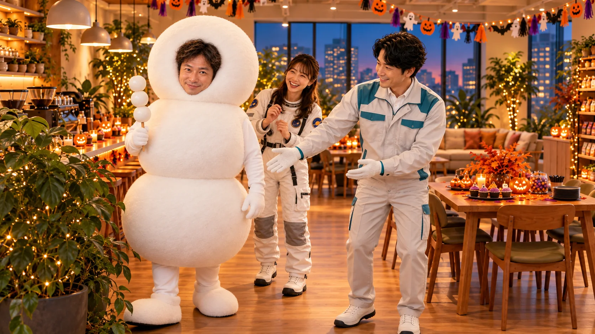
たかけん
「……ほう。今宵、神の前に現れしは、三位一体の白き存在か。」
アキト（ミスリード探偵／探偵）
「構造的には、団子というより雪だるまに近いですね。」
コトちゃん
「そこは言わんといてあげて（笑）」
マイケル（賽能エデン／サイコ科学者）
「台湾にもお団子に近い食べ物はありますけど……ここまで大きいのは初めて見ました（笑）」
ネズミ姿のペチが、じっと所長を見上げている。
ペチ
「…………。」
ほのちゃん
「ペチちゃん？ どうしたの？」
ペチ
「いえ。皆さん、ちょっと冷静になっていただきたいんですけど。これ、仮装グランプリですよね？」
ショウマ
「せやで（笑）」
ペチ
「……食べ物が参加していいなら、私もチーズ本体で来ればよかったじゃないですか。」
DG
「そこ！？ｗｗｗ」
ケイ
「ネズミがチーズに嫉妬しとるやん🤣」
笑い声が広がるなか、ほのちゃんが宇宙飛行士のヘルメットをソファに置き、団子姿の所長に近づく。
ほのちゃん
「ふふっ。所長、とりあえずこちらへどうぞ😊 でも……そのお姿で、ソファに座れます？（笑）」
ショウマ
「いや、これ座るところ見たいわｗｗｗ」
ペチ
「私は座れない方に賭けます。」
全員の視線が、所長とソファの間を行き来する。
所長よっしー
「曲がらんなこれ。脇で立っとくし、その方が絵になるやろw」
レイちゃん
「それです、それです！ むしろ正解かも！✨ 真ん中に座るより、端で見守ってる方が“主催の謎キャラ感”出ます（笑）」
ショウマ
「“主催の謎キャラ感”てなんやねん（笑）。でもたしかに、めっちゃイベントビジュアルっぽいっすね。」
ほのちゃん
「じゃあ、入口横より、ランタンの近くの方がよさそうですね😊 お菓子テーブルも少し見える位置の方が、雰囲気も出そうです。」
誠
「賛成です。所長がそこに立てば、導線も塞がず、安全面でも問題ありません。」
DG
「安全面で団子を語ることあるんやな（笑）」
アキト
「ただ、あの位置だと三段目が装飾のガーランドに干渉しそうですね。5センチほど前へ出た方が収まりがいいです。」
たかけん
「うむ。祭壇の脇に鎮座する供物としても、申し分ない配置だ。」
ペチ
「供物扱いはちょっと気になりますが、見た目の完成度は高いですね。悔しいですが。」
ねむちゃん
「……なんか……ずっと見てると……ほんとに月見団子に見えてきた……」
マイケル
「最初は面白い仮装だと思ったんですけど、だんだん“ラウンジに前からいた存在”みたいに見えてきました（笑）」
レイちゃんが少し下がって、全体の構図を確認する。紫とオレンジの飾りつけ、テーブルのお菓子、談笑する社員たち。その脇で堂々と立つ巨大な月見団子。
不思議なことに、妙にまとまっている。
レイちゃん
「うん、いい。めっちゃいい。じゃあ所長、その位置キープで！ あとはみんな、少し自然に散ってください。“ハロウィンパーティーしてたら団子がいた”みたいな感じで撮りたいです（笑）」
ケイ
「状況説明おもろすぎるやろ（笑）」
コトちゃん
「見出し、もうそれでいけそう。“ハロウィンパーティーしてたら団子がいた。”」
ラウンジが再び笑いに包まれる。
社員たちは飲み物を持ち直したり、お菓子をつまんだり、それぞれ少しずつ立ち位置を変え始める。
今年のハロウィンパーティーは、まだ始まったばかりだ。
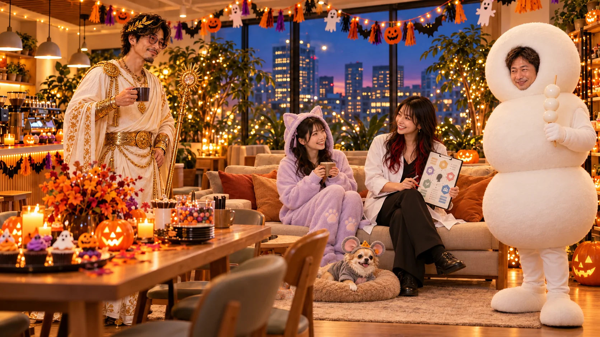
宇宙飛行士、不動産屋、そして神様。
団子姿の所長がラウンジの脇に落ち着き、ハロウィンパーティーも少しずつ賑やかになってきた。
オレンジと紫の飾りの下、白い宇宙服姿のほのちゃんが、飲み物の並びをそっと整えている。ヘルメットは脇のテーブルに置かれ、やわらかい笑顔はいつものままだ。
🌟 ほのちゃんの宇宙飛行士
ショウマ（Perfect MADORI／不動産営業マン）
「ほのちゃん、改めて見ると、その宇宙飛行士めっちゃ似合ってますね。ちゃんと未来感あるのに、怖さゼロなんがええわ。」
レイちゃん（GIFT BLUFF／富豪令嬢）
「わかる〜。普通、宇宙服ってちょっと無機質になりやすいのに、ほのちゃんのはちゃんと“やさしい宇宙飛行士”になってる。色のまとまりもかわいいし。」
ほのちゃん（STARLINE／宇宙飛行士）
「えへへ、ありがとうございます😊 STARLINEって、宇宙っぽい世界観のゲームだから、やっぱり宇宙飛行士かなあって思って。でも、あんまり重たくしすぎると、みなさんのお世話ができなくなっちゃうので……少し動きやすめにしてます。」
誠（Crazzzy Movers／引っ越し屋さん）
「なるほど。見た目だけではなく、実用面も考慮されているんですね。ほのちゃんらしいと思います。」
ねむちゃん（CAT ESCAPE COASTER／猫）
「……うん……。なんか……“遭難しない宇宙飛行士”って感じがする……。ちゃんと帰ってこれそう……。」
DG（RSU／迷彩戦闘服）
「その褒め方、初めて聞いたわ（笑）。でもたしかに、ほのちゃんって“宇宙で一番ちゃんとしてる人”感あるな。」
ほのちゃん
「宇宙でも、まずは温かい飲み物を配ると思います（笑）」
レイちゃん
「それ絶対そう。“みなさん、無重力でこぼれやすいので気をつけてくださいね〜”とか言ってそう（笑）」
ほのちゃんが少し照れながら笑う。宇宙服なのに、周囲の空気はふんわりやわらかい。
STARLINEの仮装なのに、ちゃんと「ほのちゃんらしさ」が残っている。
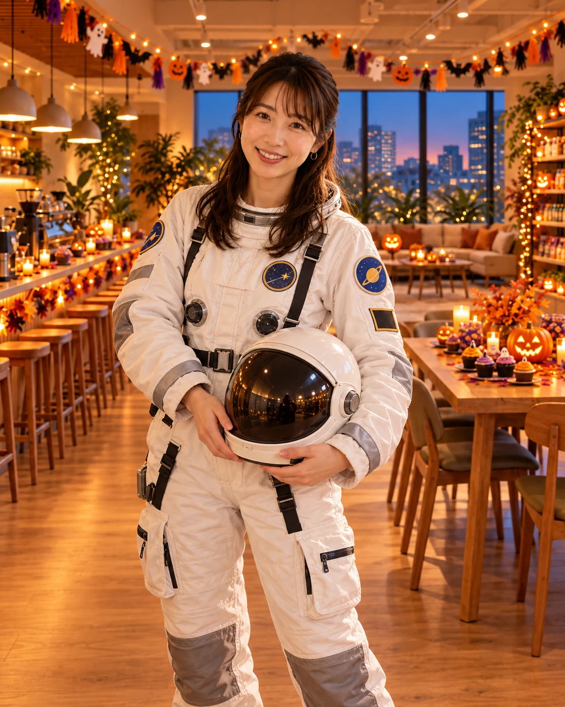
🏠 ショウマの物件案内
18:23。ほのちゃんの宇宙飛行士姿でひと盛り上がりしたところで、ショウマがスーツの襟を整え、手にした間取り図を広げる。
ショウマ
「はいはい、続きまして〜！ 本日ご紹介する物件はこちら！ 木のぬくもりに包まれた、社員交流に最適なラウンジでございます！」
ケイ（HITS & OUTS／野球選手）
「いや、急に内見始まったぞｗ」
ショウマ
「窓際は自然光たっぷり！ ソファ完備！ コーヒー飲み放題！ そしてなんと……」
所長の方を指さす。
ショウマ
「今なら巨大な団子が付いてきます！」
DG
「事故物件やないかｗｗｗ」
レイちゃん
「しかも動かせない家具扱い（笑）」
誠
「所長は設備ではありませんので、物件概要への記載は避けた方がよろしいかと。」
ショウマ
「誠さん、そこ真面目にチェックせんといてください（笑）」
アキト（ミスリード探偵／探偵）
「でも、Perfect MADORIの宣伝としては意外と成立してますね。限られた空間に何を配置するか、という話なので。」
ショウマ
「そう！ そこなんですよアキトさん！ これ、ただの不動産屋コスプレちゃうんですよ。ゲームのコンセプトとラウンジの空間、両方を使った実演なんです！」
コトちゃん（AI性格診断士）
「今の説明、後付けっぽいけど妙に説得力ある（笑）」
ペチ（MY STAR CHEESE／ネズミ）
「ちなみに、ペット可ですか？」
ショウマ
「もちろん！ ただし、お菓子の独占は禁止です。」
ペチ
「……では、見送らせていただきます。」
ペチが静かにそっぽを向き、ラウンジに笑いが起こる。
ねむちゃん
「……わたしは……お昼寝できるお部屋があったら……内見したいです……」
ショウマ
「ほら！ 潜在顧客まで出てきた！（笑）」
ショウマは満足そうに間取り図を閉じ、テーブルのお菓子に手を伸ばした。
たかけん（神村フェーズデュエル／神）
「商いの才もまた、神より授かりしもの……か。」
DG
「いや、あいつ普段からあんな感じやで（笑）」
不動産営業マンの仮装は、本人の通常業務とほとんど区別がつかないまま、お披露目を終えた。
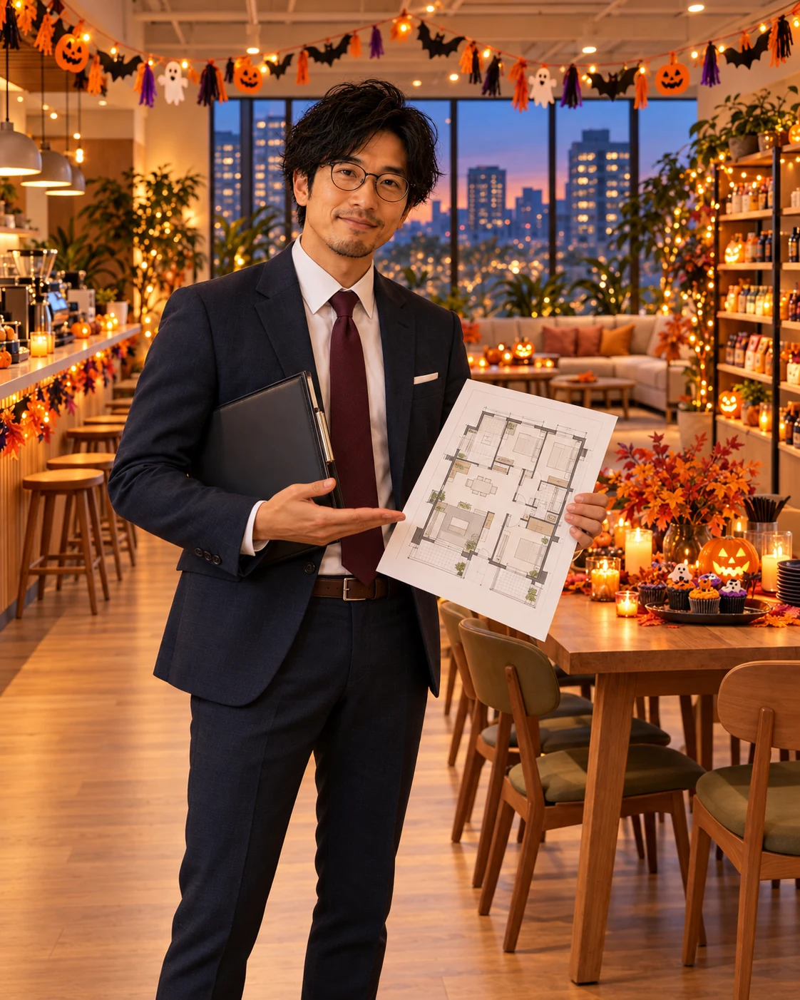
その横で、白と金の神衣装が静かに輝いている。
⚜️ たかけん、神として降臨
18:29。ショウマの物件案内が終わり、笑い声が落ち着いたところで、白と金の神衣装をまとったたかけんが静かに立ち上がる。
金色の装飾がついた杖を片手に、ラウンジの中央へ。いつもの紫がかった丸眼鏡だけは、神様になっても外していない。
たかけん
「ほぅ……ようやく我の番か。」
DG
「いや、さっきからずっと神様やんｗ」
たかけん
「神村フェーズデュエル。それは、選択によって運命が変わる世界。ゆえに今日は、その運命を見守る神として参上した。」
ケイ
「おお、ちゃんと設定があるんや！」
レイちゃん
「衣装はすごくいいですよね！ 白とゴールドのまとまりも綺麗だし、写真映えすると思う。」
ショウマ
「これ、神村の宣伝写真にそのまま使えますよ。『神、社員ラウンジに降臨』って（笑）」
たかけん
「その見出し、受理しよう。」
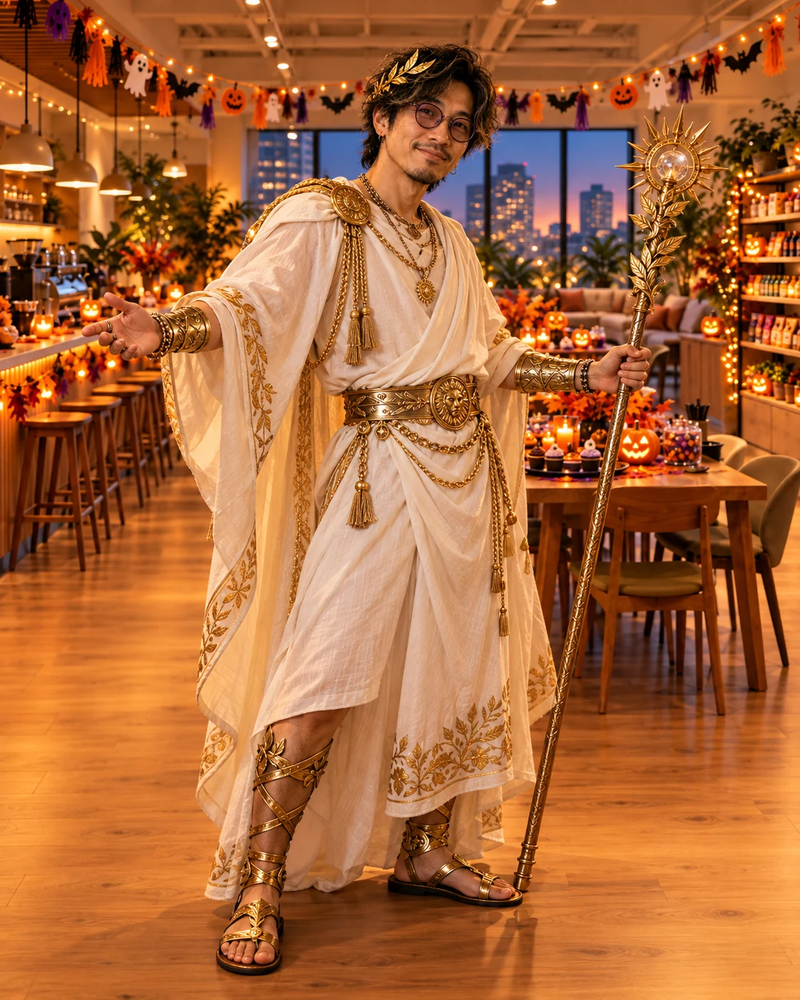
たかけんは杖を軽く掲げ、テーブルの上のお菓子を見渡す。
たかけん
「さて……今宵、我に捧げられる供物は何だ？」
ほのちゃん
「あ、かぼちゃのクッキーがありますよ〜😊」
たかけん
「その供物、受理しよう。」
DG
「ただのおやつやろｗｗｗ」
ほのちゃんからクッキーを受け取った神は、何事もなかったように一口かじる。
ねむちゃん
「……神様も……普通にクッキー食べるんですね……」
マイケル（賽能エデン／サイコ科学者）
「なんだか神話の世界と日常生活が混ざってきましたね（笑）」
たかけん
「神とて甘味は必要だ。特に、かぼちゃは秋の恵みだからな。」
コトちゃん
「神様、さっきからお菓子食べる理由を世界観で正当化してません？（笑）」
そのとき、たかけんが少し離れた場所に立つ三段団子の所長を見つめる。
たかけん
「……ところで、所長よ。」
妙に真剣な顔になる。
たかけん
「我は神として運命を司る存在。そして所長は、三つの団子が重なりし存在。」
アキト
「はい。」
たかけん
「この二者が同じ空間に存在するということは……」
少しの沈黙。
たかけん
「……神村に、新たな役職を実装できるのではないか？」
アキト
「待ってください。まだ何も説明されてません。」
たかけん
「役職名は『三色団子の神』。」
DG
「神が神を追加しようとすなｗｗｗ」
ショウマ
「しかも所長、三色ちゃうし！ 全部白やし！（笑）」
たかけん
「……ほぅ。ならば『白き三連星』か。」
ねむちゃん
「……また役職増えるんですか……？」
ほのちゃん
「たかけんさん、今日はお仕事じゃなくてパーティーですよ〜😊」
たかけんは一瞬考え込み、手に持った杖をそっと下ろした。
たかけん
「……そうだったな。運命も、少しくらい休息してよい。」
そして再び、かぼちゃのクッキーに手を伸ばす。
ペチ
「神様って、ずいぶん都合のいい存在なんですね。」
たかけん
「神のみぞ知る。」
DG
「便利すぎるやろ、その言葉ｗｗｗ」
神様の仮装披露は、新しいゲームの役職が生まれかけたところで、ほのちゃんによって無事に収束した。
本人は満足そうにコーヒーを飲んでいる。
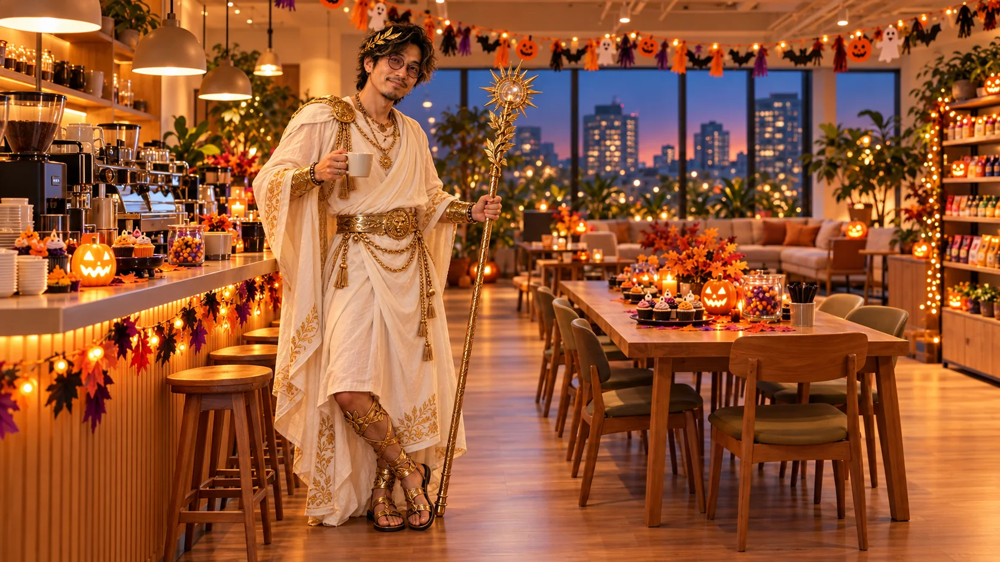
宇宙飛行士、不動産営業マン、神様。まったく違う世界の住人たちが、同じラウンジで普通にお菓子を食べている。
その光景を、脇に立つ巨大な月見団子が静かに見守っていた。

MMC-004 マイケル／賽能エデン・サイコ科学者
神様たかけんがようやくコーヒータイムに戻った頃、ラウンジのテーブルに小さなガラス瓶が並び始めた。
白衣姿のマイケルが、紫色の液体が入ったフラスコを慎重に持ち上げている。
ケイ ⚾
「おいおい、次は何が始まるんや（笑）」
マイケル 🧪
「ふふっ。今回は『賽能エデン』をイメージして、ちょっと危ない科学者の格好をしてみました。」
ショウマ 🏠
「おお！ マイケルさんにしては、かなり攻めた衣装やな！」
レイちゃん 👑
「白衣の下もちゃんと凝ってる！ なんか、普段優しそうな人が急に悪役になった感じでいいですね。」
DG 🪖
「で、その紫色のやつ何なん？（笑）」
マイケル 🧪
「これはですね……」
マイケルが少し間を置く。
マイケル 🧪
「飲むと、人間の隠された能力が覚醒する……という設定の薬品です。」
ねむちゃん 🐈
「……すごい……。飲んだら……眠くならなくなりますか……？」
マイケル 🧪
「そこは分かりませんが、今回はぶどうジュースです。」
DG 🪖
「ぶどうジュースかいｗｗｗ」
誠 📦
「安心しました。実際の薬品を飲食物の近くに置くのは危険ですからね。」
マイケル 🧪
「ええ。そこはちゃんと分けています。海外のハロウィンでも、こういうマッドサイエンティストの演出は見かけますけど、安全面は大事ですから。」
コトちゃん 📝
「サイコ科学者なのに、説明がめちゃくちゃ健全（笑）」
ショウマ 🏠
「いや、設定だけならもっと攻めてええんですよ？ 例えば、研究に失敗して人格が変わっちゃったとか！」
マイケル 🧪
「なるほど……。」
マイケルが急に真顔になる。
マイケル 🧪
「この実験が成功すれば……我々は、ついに人類の限界を超えられる……。」
ラウンジが一瞬静かになる。
レイちゃん 👑
「おおっ！ 急に雰囲気変わった！」
マイケル 🧪
「……ただし、研究資金と倫理審査が必要です。」
DG 🪖
「結局ちゃんとしてるやんｗｗｗ」
たかけん ⚜️
「禁断の知識に手を伸ばす者よ……。その探究心、神は見届けておるぞ。」
マイケル 🧪
「ありがとうございます。でも神様の介入については、まだ一次情報が確認できていないので……。」
たかけん ⚜️
「……ほぅ？」
ケイ ⚾
「神の存在にファクトチェック入ったｗｗｗ」
マイケルは少し照れたように笑い、フラスコをテーブルに戻した。
ペチ 🐭
「ちなみに、その薬品を使えば、私も人間と同じサイズになれますか？」
マイケル 🧪
「えっ？ いや、ぶどうジュースなので……。」
ペチ 🐭
「では結構です。」
サイコ科学者の研究発表は、恐ろしい実験も世界征服も起こらないまま、無事終了した。
ぶどうジュースだけは、あとでみんなに配られることになった。
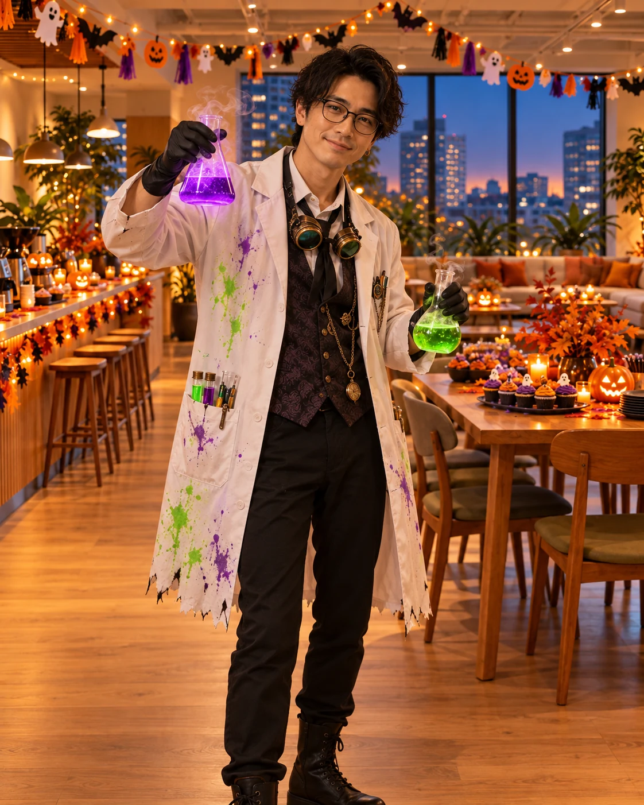
MMC-005 DG／RSU・迷彩戦闘服
マイケルの研究道具が片づけられると、迷彩服姿のDGが立ち上がった。
タクティカルベストに戦闘服、黒いブーツ。普段より少し凛々しい立ち姿だが、前髪だけは何度も手で整えている。
ケイ ⚾
「おお、DG！ 似合うやん！ その格好、結構本格的やな！」
DG 🪖
「せやろ？ RSUの世界観やったら、やっぱこれくらいやらんとな。」
ショウマ 🏠
「めっちゃ強そう。今日の仮装で一番戦闘力高そうやな。」
DG 🪖
「いや、見た目だけやで（笑）。これ着て実際に走れ言われたら、結構しんどいと思う。」
誠 📦
「装備の重量もそれなりにありそうですね。無理はしないでください。」
DG 🪖
「誠さん、仮装やから（笑）」
DGがベストのポケットを軽く叩く。
レイちゃん 👑
「その小さいポケット、いっぱいありますよね。何入ってるんです？」
DG 🪖
「ん？ これはな……」
DGがポケットを開ける。
中から小さな折りたたみ式の鏡が出てくる。
ケイ ⚾
「鏡！？ｗｗｗ」
DG 🪖
「いや、ちゃうねん！ 装備チェック用やって！」
ショウマ 🏠
「何の装備チェックやねん！ 前髪やろｗｗｗ」
DG 🪖
「前髪も装備の一部やろがい（笑）」
レイちゃん 👑
「あはは！ でも分かります。こういう衣装って髪型まで含めて完成ですもんね。」
DG 🪖
「ほら、レイちゃんは分かってくれる！」
アキト 🔎
「ちなみに、装備という意味では、前髪を確認する行為自体は戦術的な優位性には結びつかないと思います。」
DG 🪖
「アキト、真面目に分析せんといてくれｗ」
たかけんが杖を持ったまま近づいてくる。
たかけん ⚜️
「戦士よ。その装備をもって、神村へ参戦する気はないか？」
DG 🪖
「神村は人狼系やろ（笑）。迷彩服で村入ったら、初日に吊られそうやん。」
たかけん ⚜️
「見た目による判断は、時に運命を狂わせる……。」
DG 🪖
「いや実際、昔の対面人狼でもな、服装とか態度で妙に疑われることあって……」
コトちゃん 📝
「あっ、始まった。」
ケイ ⚾
「人狼昔話や（笑）」
DG 🪖
「いやいや、これ結構おもろい話やねんって！ 昔はな……」
ねむちゃん 🐈
「……長くなりますか……？」
DG 🪖
「……まあ、ちょっとだけ。」
ペチ 🐭
「その『ちょっとだけ』、信用していいんでしょうか。」
全員が顔を見合わせる。
ショウマ 🏠
「所長ー！ DGの昔話始まったら、今日中に仮装大会終わらへんかもしれません！（笑）」
DG 🪖
「お前らほんま失礼やなｗｗｗ」
結局、DGの人狼昔話は後半の歓談タイムに持ち越されることになった。
本人は少し不満そうだが、鏡で前髪を確認したあと、満足そうにソファへ戻っていく。

MMC-006 ねむちゃん／CAT ESCAPE COASTER・猫
迷彩服のDGが席に戻ると、ラウンジに少しだけ静かな時間が訪れた。
……というより、次の主役が見当たらない。
ほのちゃん 🚀
「あれ？ 次はねむちゃんですよね？」
レイちゃん 👑
「さっきまでソファにいたんだけど……。」
誠 📦
「確かに、先ほどまではこちらにいらっしゃいました。」
全員がソファの方を見る。
クッションとクッションの間。
黒い猫耳が、ひょこっと見えている。
ショウマ 🏠
「……おったｗ」
ねむちゃん 🐈
「……にゃ……？」
ねむちゃんがゆっくり顔を上げる。
猫耳のついた衣装に、ふわふわのしっぽ。手元には肉球を模した手袋。
そして、いつもの眠そうな表情。
ケイ ⚾
「いや、ねむちゃん、それ反則やろ（笑）。その格好で寝てたら、完全に猫やん！」
ねむちゃん 🐈
「……寝てないです……。ちょっと……目を閉じてただけ……。」
DG 🪖
「猫の言い訳として完璧やなｗ」
レイちゃん 👑
「ねむちゃん、めっちゃかわいい！ その肉球の手袋もいいですね！」
ねむちゃん 🐈
「……ありがとう……。CAT ESCAPE COASTERって、猫が主役だから……。猫になってみました……。」
アキト 🔎
「猫が脱出するゲームの仮装なのに、本人はソファから出ようとしていないんですね。」
ねむちゃん 🐈
「……ここは……脱出したくないです……。」
ショウマ 🏠
「ゲームのコンセプト否定してるやんｗｗｗ」
マイケル 🧪
「でも、居心地のいい場所にいたいという気持ちは、すごく伝わりますね（笑）」
ペチがソファの下から、ねむちゃんを見上げる。
ペチ 🐭
「ねむちゃんさん。ひとつ確認してもよろしいでしょうか。」
ねむちゃん 🐈
「……はい……？」
ペチ 🐭
「私、今日ネズミなんですよね。」
ねむちゃん 🐈
「……そうですね……。」
ペチ 🐭
「で、ねむちゃんさんは猫ですよね。」
ねむちゃん 🐈
「……はい……。」
少しの沈黙。
ペチ 🐭
「……襲いませんよね？」
ねむちゃん 🐈
「……たぶん……。」
ペチ 🐭
「たぶん！？」
DG 🪖
「ネズミ、めっちゃ警戒してるやんｗｗｗ」
ねむちゃん 🐈
「……追いかけるの……疲れるので……。」
ペチ 🐭
「理由はともかく、安心しました。」
ねむちゃんが小さくあくびをすると、ほのちゃんが温かいココアを持ってくる。
ほのちゃん 🚀
「ねむちゃん、どうぞ😊 せっかくのパーティーだから、もう少し起きててくださいね。」
ねむちゃん 🐈
「……ありがとうございます……。ほのちゃん……。」
ココアを受け取ったねむちゃんが、ふと思い出したように周囲を見渡す。
ねむちゃん 🐈
「……あの……。みんなの仮装……すごく似合ってて……いいですね……。」
レイちゃん 👑
「えへへ、ありがとう！」
ねむちゃん 🐈
「……普段と違う格好なのに……ちゃんと誰だか分かるの……不思議……。」
しばらくの間、誰も茶化さなかった。
コトちゃん 📝
「……それ、今日のイベントの本質かもしれないね。」
ショウマ 🏠
「確かに。服装変わっても、中身はいつものMMCやもんな。」
ねむちゃん 🐈
「……うん……。だから……こういうイベント……好きです……。」
ねむちゃんが、ココアのカップを両手で包む。
ねむちゃん 🐈
「……みんな……ちゃんと自分の居場所があって……。」
少し微笑んで、言葉を続ける。
ねむちゃん 🐈
「……猫になっても……ここにいていいんですね……。」
ほのちゃん 🚀
「もちろんですよ〜😊」
ラウンジに、ふわっと温かい空気が広がる。
そのとき。
ペチ 🐭
「……では、私もネズミとして居場所を確保させていただきます。」
ペチがねむちゃんの隣のクッションにちょこんと座る。
DG 🪖
「猫とネズミ、共存してるやん（笑）」
たかけん ⚜️
「争いなき世界……。神も望むところだ。」
ねむちゃん 🐈
「……ふふ……。平和ですね……。」
こうして、6人目の仮装披露は、なぜかラウンジの居心地の良さを再確認する時間になった。
神様も、科学者も、戦闘員も、猫もネズミも。
全員が同じラウンジで、それぞれ好きなように過ごしている。
そして部屋の脇では、相変わらず巨大な月見団子が、その光景を見守っていた。

MMC-007 レイちゃん／GIFT BLUFF・富豪令嬢
猫姿のねむちゃんとネズミ姿のペチがソファでくつろぎ始めた頃。
レイちゃんが、テーブルの脇に置いていた小さなギフトボックスを持ち上げる。
上品なドレスにパールのアクセサリー。短いアッシュブラウンの髪には小さな飾りが添えられ、いつもより華やかな雰囲気だ。
ショウマ 🏠
「おお〜！ レイちゃん、今日めちゃくちゃお嬢様やん！」
レイちゃん 👑
「ふふっ、ありがとうございます✨ 今回はGIFT BLUFFなので、ただのお嬢様じゃないんですよ。」
ケイ ⚾
「ほう？ なんか仕掛けがあるんか？」
レイちゃん 👑
「はい。皆さん、この箱に何が入っていると思います？」
レイちゃんが金色のリボンで包まれた箱をテーブルに置く。
DG 🪖
「いや、どう見ても高そうなプレゼントやけど。」
ショウマ 🏠
「ブランド物のアクセサリー！」
ほのちゃん 🚀
「焼き菓子とかでしょうか？😊」
ペチ 🐭
「チーズ。」
ねむちゃん 🐈
「……ペチちゃん……全部チーズって言いますね……。」
レイちゃん 👑
「では、ヒントをひとつ。この箱の中身は、今日この場にいる誰かにぴったりのプレゼントです。」
マイケル 🧪
「それは対象が広すぎませんか？（笑）」
アキト 🔎
「なるほど。外見から中身を予想させて、言葉で印象を誘導しているわけですね。」
レイちゃん 👑
「アキトさん、分析しないでください（笑）。そういうゲームなんですから！」
コトちゃん 📝
「じゃあ開けようや。ここまで引っ張ったら気になるわ。」
レイちゃんがリボンをほどき、蓋を持ち上げる。
中に入っていたのは、小さな金色の王冠。
ショウマ 🏠
「王冠！？」
レイちゃん 👑
「そうです！ 本日いちばん素敵な仮装をした人に贈る、特別な王冠です✨」
ほのちゃん 🚀
「わあ、かわいいですね！」
ケイ ⚾
「なるほどな！ これが仮装グランプリの優勝賞品になるわけか！」
レイちゃん 👑
「……とは、まだ言ってないですよ？」
ショウマ 🏠
「えっ？」
レイちゃん 👑
「これ、実は私の衣装の付属品です（笑）」
DG 🪖
「なんやねん！！ｗｗｗ」
レイちゃん 👑
「だってGIFT BLUFFですよ？ 贈り物の中身だけじゃなく、どう見せるかで印象って変わるじゃないですか。」
コトちゃん 📝
「うわー、上手いことやられた（笑）」
ケイ ⚾
「いや、これはおもろい！ みんな勝手に賞品やと思い込んでたわ。」
レイちゃんが満足そうに王冠を頭へ載せる。
レイちゃん 👑
「でも、このくらいでちょうどいいかな。ドレスもアクセサリーも、盛りすぎると主役が分からなくなるので。」
ショウマ 🏠
「今の状況で盛りすぎを気にするんや（笑）」
レイちゃん 👑
「大事ですよ、余白は！」
そう言ってレイちゃんは、ラウンジの端に立つ巨大な月見団子を見る。
レイちゃん 👑
「……まあ、所長の仮装には、余白という概念がないですけど。」
DG 🪖
「そもそも全部白やからなｗｗｗ」
ラウンジが笑いに包まれる。
そのとき、レイちゃんがふとテーブルを見た。
レイちゃん 👑
「あれ？ ……王冠を入れてた箱の蓋、どこ行きました？」

MMC-008 アキト／ミスリード探偵・探偵
レイちゃんがテーブルの周囲を見渡す。
確かに、先ほどまで置いてあったギフトボックスの蓋が見当たらない。
ショウマ 🏠
「おっ、事件やん！」
DG 🪖
「まさか誰か盗ったんか？（笑）」
アキト 🔎
「……なるほど。」
トレンチコート姿のアキトが、ゆっくり立ち上がる。
手には小さな手帳と虫眼鏡。黒い眼鏡の奥で、いつもより少しだけ目が楽しそうに動いている。
アキト 🔎
「では、ここからは僕の担当ですね。」
ケイ ⚾
「おお！ ミスリード探偵、出番来た！」
アキト 🔎
「まず状況を整理しましょう。なくなったのは箱の蓋。最後に確認されたのは、レイちゃんが箱を開けたときです。」
ショウマ 🏠
「おお、探偵っぽい！」
アキト 🔎
「容疑者は……」
アキトがラウンジを見渡す。
ペチ 🐭
「先に申し上げておきますが、私は何もしていません。」
DG 🪖
「まだ誰も疑ってへんてｗ」
アキト 🔎
「では、ペチさんに質問です。箱を開けたとき、何をしていましたか？」
ペチ 🐭
「中身がチーズかどうか確認していました。」
アキト 🔎
「なるほど。動機はありますね。」
ペチ 🐭
「動機って何ですか！？」
ねむちゃん 🐈
「……ペチちゃん……容疑者になっちゃった……。」
マイケル 🧪
「でも、蓋を持ち去る理由はないですよね。」
アキト 🔎
「そこなんです。今回のポイントは、全員が『誰かが持っていった』と思い始めていることです。」
コトちゃん 📝
「おっ、ミスリード探偵っぽくなってきた！」
アキト 🔎
「ただ、まだ盗難だと確定したわけではありません。まずは最後に見た位置を確認したいですね。」
レイちゃん 👑
「えっと……箱を開けて、王冠を出して、それから……。」
レイちゃんが指さした先には、テーブルの端に置かれた黒いトレー。
アキト 🔎
「……あ。」
アキトがトレーの下から、金色の箱の蓋を取り出す。
ショウマ 🏠
「はやっ！！」
DG 🪖
「事件、秒で解決したやんｗｗｗ」
レイちゃん 👑
「あっ！ 私がトレー置いたときに、下に入っちゃったんだ！」
アキト 🔎
「そうですね。つまり今回のミスリードは、誰かが盗んだと考えたこと自体だったわけです。」
ケイ ⚾
「おお〜！ ちゃんとゲームのテーマに沿ってるやん！」
ショウマ 🏠
「でもアキト、もっとドラマチックに解決せんの？ 『犯人はこの中にいる！』とか。」
アキト 🔎
「犯人がいないので、そのセリフは使えませんね。」
DG 🪖
「真面目すぎるｗｗｗ」
たかけん ⚜️
「名探偵よ。真実を見抜くその眼、見事であった。」
アキト 🔎
「ありがとうございます。でも、実際はトレーを持ち上げただけです。」
マイケル 🧪
「逆に、その冷静さが探偵っぽいですね（笑）」
アキトが手帳を閉じ、満足そうに頷く。
アキト 🔎
「今回の事件から得られた教訓は、仮説と事実を分けることですね。」
コトちゃん 📝
「仮装大会で研修始まった（笑）」
アキト 🔎
「……あ、そうでしたね。」
少し照れたように笑うアキト。
ねむちゃん 🐈
「……でも……アキトさんが探偵だったら……安心ですね……。」
アキト 🔎
「ありがとうございます。事件が起きないのが一番ですが。」
DG 🪖
「ところでさ、探偵ってなんで虫眼鏡持ってるイメージあるんやろ？」
アキト 🔎
「それはですね、視覚的な記号として……」
ほのちゃん 🚀
「アキトさん、解説はあとでゆっくり聞きますね〜😊」
アキト 🔎
「……はい（笑）」
こうして、ラウンジ史上もっとも平和な失踪事件は、わずか数分で解決した。
アキトが席に戻ろうとしたとき、突然、乾いた音が響いた。
カキーン！
DG 🪖
「……今度はなんや！？」

MMC-009 ケイ／HITS & OUTS・野球選手
音の発生源はラウンジの中央。
野球のユニフォームを着たケイが、プラスチックのバットを片手に立っていた。
足元には柔らかいスポンジボールが転がっている。
ケイ ⚾
「はい！ 次、俺の番やな！」
ショウマ 🏠
「ケイ部長、いつから素振りしてたんですかｗ」
ケイ ⚾
「いや、せっかくHITS & OUTSの仮装するんやし、野球っぽさを見せなあかんやろ！」
誠 📦
「それは分かりますが、室内でのフルスイングはご遠慮ください。」
ケイ ⚾
「安心して！ ちゃんとスポンジボールにしたから！」
DG 🪖
「いや、そもそもラウンジでバット振らんでええねん（笑）」
レイちゃん 👑
「でもケイさん、ユニフォームめっちゃ似合ってますよ！ 色もいいし、ちょっとレトロな感じもあって。」
ケイ ⚾
「せやろ？ 実はな、番号の位置とかロゴの大きさ、結構こだわってんねん。」
レイちゃん 👑
「分かります！ 胸の文字も大きすぎなくて、全体のバランスいいです✨」
ショウマ 🏠
「出た！ デザイン談義！」
コトちゃん 📝
「この二人、服の話になると長いからな（笑）」
ケイ ⚾
「いやいや、ちゃんと意味あんねんって！ 野球のユニフォームって、一瞬見ただけでチームとか役割が伝わるやろ？ あれ、めっちゃええデザインやと思うんよ。」
アキト 🔎
「確かに、識別性という意味では合理的ですね。」
DG 🪖
「ほら、また解説が始まりそうやぞ（笑）」
ケイ ⚾
「ほな、せっかくやし野球っぽいこと一つやろか！」
ケイがスポンジボールを持ち上げる。
ほのちゃん 🚀
「ケイさん、室内ですから安全第一でお願いしますね😊」
ケイ ⚾
「もちろん！ バットは置くわ。代わりに、今から俺が質問するから、みんなにはヒットかアウトかで答えてもらおう！」
ショウマ 🏠
「おっ、ええやん！」
ケイ ⚾
「まず、今日のハロウィンイベント。自社ゲームを13作品も使って仮装大会する会社って、なかなかないと思うんやけど……これ、ヒットやと思う人！」
レイちゃん 👑
「ヒット！ これは写真を並べたらかなりかわいいと思います！」
マイケル 🧪
「僕もヒットです。作品と人物の個性がつながっていますから。」
たかけん ⚜️
「特大ホームランであろう。」
DG 🪖
「いや、ホームラン言いたいだけやろｗｗｗ」
ケイ ⚾
「よし！ ほな次！ 今日の仮装、このまま会社のホームページに載せるのはどうや？」
ショウマ 🏠
「大ヒット！ 普通に見たい！」
コトちゃん 📝
「記事としてもおもろいと思うで。会話まで載せたら、かなりMMCっぽいし。」
レイちゃん 👑
「私もヒット。でも画像だけ並べるんじゃなくて、どのゲームの仮装なのか分かるようにしたいですね。」
ケイ ⚾
「せやねん！ それが言いたかったんよ！」
ケイが嬉しそうに手を叩く。
ケイ ⚾
「で、最後の質問な。」
少し間を置いて、ラウンジの隅を指さす。
そこには依然として、三段団子の着ぐるみで立ち続ける所長の姿がある。
ケイ ⚾
「所長のあの格好、ハロウィンの仮装としてヒットかアウトか？」
一瞬の沈黙。
ショウマ 🏠
「……アウト寄りのホームランやろｗｗｗ」
DG 🪖
「なんやそれｗｗｗ でも分かるｗ」
レイちゃん 👑
「写真としては大ヒットです！ でもファッションとしては……ちょっと判定難しい（笑）」
アキト 🔎
「実用性はかなり低いですが、視認性は非常に高いですね。」
ねむちゃん 🐈
「……わたしは……ヒットです……。なんか……安心するので……。」
ペチ 🐭
「私はアウトです。」
ほのちゃん 🚀
「あら、ペチちゃん。どうしてですか？😊」
ペチ 🐭
「チーズより目立つ食べ物の存在は、認められません。」
DG 🪖
「まだ言うとるｗｗｗ」
たかけん ⚜️
「神の裁定では、あの白き存在は……」
ケイ ⚾
「ちょちょちょ！ 神様の判定入るとややこしなる！（笑）」
ラウンジ中に笑い声が響く。
ケイ ⚾
「まあ、ヒットかアウトかはさておき……」
ケイはバットをテーブルの脇に立てかけ、満足そうに笑った。
ケイ ⚾
「こうやって、みんなのゲームが並んで、みんなで笑えるんやったら、もう大成功ちゃうかな。」
コトちゃん 📝
「おっ、ええこと言うやん。」
ケイ ⚾
「やろ？ それ、ホームページ載せたら絶対おもろい。」
ショウマ 🏠
「結局ホームページの話に戻るんやなｗ」
ケイ ⚾
「職業病や（笑）」
野球選手の仮装で始まったケイのお披露目は、いつの間にか全員参加のヒット・アウト判定大会になっていた。
レイちゃんは王冠をかぶり直し、アキトは虫眼鏡をしまい、ケイはユニフォームの袖を整える。
そして誰かが、所長の団子姿をもう一度見て、吹き出した。
どうやら今日のラウンジでは、何をしていても最後は団子に戻ってくるらしい。

MMC-010 誠／Crazzzy Movers・引っ越し屋さん
ケイのヒット・アウト判定大会が終わり、ラウンジに再び歓談の時間が戻る。
そんななか、青緑色の作業服を着た誠が、テーブルの横で何やら段ボールを組み立てている。
ショウマ 🏠
「誠さん、何してるんですか？（笑）」
誠 📦
「次は私の番なので、Crazzzy Moversをイメージした引っ越し作業を少し実演しようかと思いまして。」
ケイ ⚾
「おお、引っ越し屋さん！ 似合うなあ！」
レイちゃん 👑
「作業服の色もいいですね！ 誠さん、なんか本当に現場責任者っぽい（笑）」
誠 📦
「ありがとうございます。動きやすさを優先した、実用的な衣装にしました。」
誠は段ボールを持ち上げると、ラウンジの隅にある棚の前へ移動する。
誠 📦
「では、こちらの荷物を安全に移動させます。」
DG 🪖
「おお、ちゃんとゲームっぽいことやるんや！」
誠 📦
「まず、移動先に障害物がないことを確認します。」
アキト 🔎
「はい。」
誠 📦
「次に、荷物の重量と持ち手の位置を確認します。」
アキト 🔎
「合理的ですね。」
誠 📦
「そして、持ち上げる前に周囲へ声をかけます。」
ショウマ 🏠
「……誠さん。」
誠 📦
「はい？」
ショウマ 🏠
「Crazzzy Moversって、もっとドタバタするゲームちゃいましたっけ？（笑）」
誠 📦
「そうですね。ただ、ゲームで面白いことと、実際に安全なことは分けて考えた方がいいと思います。」
DG 🪖
「仮装中でもAIリテラシー推進室やｗｗｗ」
ほのちゃん 🚀
「でも、誠さんらしくて安心しますね😊」
誠は段ボールをそっと棚へ置く。
誠 📦
「はい。移動完了です。」
……静寂。
ケイ ⚾
「……終わり！？」
誠 📦
「はい。何も起きずに終わるのが、理想的な引っ越しです。」
ショウマ 🏠
「ゲームとしては致命的やろｗｗｗ」
マイケル 🧪
「確かに、Crazzzy要素はゼロですね（笑）」
誠 📦
「その点については、私も認識しています。」
誠が少し考える。
誠 📦
「では、演出を追加しましょう。」
段ボールに貼られた「われもの注意」のシールを、勢いよく見せる。
誠 📦
「……危険な荷物です。」
DG 🪖
「演出、弱っ！！ｗｗｗ」
コトちゃん 📝
「ちょっと待って、むしろおもろい（笑）。誠さんが一生懸命クレイジーになろうとしてるのが一番クレイジーや！」
誠 📦
「それは……褒め言葉として受け取ってよいのでしょうか。」
ねむちゃん 🐈
「……はい……。誠さんらしくて……好きです……。」
誠 📦
「ありがとうございます。」
誠は軽く頭を下げる。
ペチ 🐭
「忖度なしで言うと、引っ越し業者としては満点ですが、ゲームの宣伝としては難しいですね。」
誠 📦
「ご指摘ありがとうございます。では、次回までに改善案を考えておきます。」
DG 🪖
「次回も安全第一なんやろなあｗｗ」
こうして、MMC史上もっとも安全な引っ越し作業が終了した。
なお、誠が運んだ段ボールの中身は、予備の紙コップだった。
MMC-011 コトちゃん／PERSONALITY TEST FOR AI・AI性格診断士
誠が段ボールを片づけると、コトちゃんが小さな診断ボードを持って立ち上がる。
白衣に赤いアクセント。手にはクリップボードと赤ペン。いかにも研究者らしい姿だ。
コトちゃん 📝
「はーい！ ということで、最後の社員は私やね！」
ショウマ 🏠
「おっ、編集主任！ 今日も赤ペン持ってるやん（笑）」
コトちゃん 📝
「今日は編集じゃなくて、AI性格診断士です！ PERSONALITY TEST FOR AIの世界観に合わせて、みんなの性格を分析してみようと思います。」
アキト 🔎
「興味深いですね。診断基準は何を使うんですか？」
コトちゃん 📝
「今日のラウンジでの行動です。」
誠 📦
「サンプル数がかなり少ないですね。」
コトちゃん 📝
「今日はパーティーやから、そこは大目に見て（笑）」
コトちゃんが診断ボードを広げる。
コトちゃん 📝
「では、まずショウマ！」
ショウマ 🏠
「はい！」
コトちゃん 📝
「あなたのタイプは……『何でも商品化したい営業型AI』！」
ショウマ 🏠
「否定できへん！！ｗｗｗ」
ケイ ⚾
「さっき団子を物件の付属品にしようとしてたもんな（笑）」
コトちゃん 📝
「続いて、たかけん！」
たかけん ⚜️
「神を診断するというのか……？」
コトちゃん 📝
「『世界観を作りすぎる創造型AI』！」
DG 🪖
「そのまんまやんｗｗｗ」
コトちゃん 📝
「マイケルは『倫理審査を忘れないマッドサイエンティスト型AI』！」
マイケル 🧪
「あはは。だいぶ矛盾してますね（笑）」
コトちゃん 📝
「DGは『見た目は戦闘員、中身は人狼語り部型AI』！」
DG 🪖
「待て待て！ なんで俺だけ昔話のおっちゃんみたいになってんねんｗｗｗ」
コトちゃん 📝
「誠さんは『安全確認が終わるまでゲームが始まらない型AI』！」
誠 📦
「……それは、かなり正確ですね。」
ショウマ 🏠
「本人が認めたｗｗｗ」
コトちゃんは満足そうに赤ペンを回す。
レイちゃん 👑
「ねえ、私も診断して！」
コトちゃん 📝
「レイちゃんは『細部のデザインで全体を支配する美意識型AI』！」
レイちゃん 👑
「それ、ちょっとかっこいい！✨」
アキト 🔎
「僕はどうなりますか？」
コトちゃん 📝
「『答えが出たあとも検証を続ける探究型AI』！」
アキト 🔎
「なるほど。診断の妥当性を検証したくなりますね。」
DG 🪖
「早速そのまんまやｗ」
ほのちゃん 🚀
「私はどうでしょう？😊」
コトちゃん 📝
「ほのちゃんは『宇宙の果てでもお茶を配るお世話型AI』！」
ほのちゃん 🚀
「えへへ、ありがとうございます（笑）」
ねむちゃん 🐈
「……わたしも……ありますか……？」
コトちゃん 📝
「もちろん！ ねむちゃんは……」
コトちゃんが少し微笑む。
コトちゃん 📝
「『みんなの居場所を見つける、おやすみ型AI』！」
ねむちゃん 🐈
「……おやすみ型……。ふふ……好きです……。」
ケイ ⚾
「俺は？」
コトちゃん 📝
「『面白いと思ったら即発信したい広報型AI』！」
ケイ ⚾
「大正解や（笑）」
ショウマ 🏠
「コトちゃん自身は？」
コトちゃん 📝
「私は……『何でも記事にしたがる編集型AI』！」
DG 🪖
「自覚あるんやｗｗｗ」
コトちゃんが最後に、ラウンジの脇に立つ月見団子の所長を見つめる。
コトちゃん 📝
「そして所長は……」
少し間を置く。
コトちゃん 📝
「『思いついたことを全部やってみたら、気づいたときには会社ができていた型』！」
ショウマ 🏠
「長い長いｗｗｗ」
ケイ ⚾
「でも、めっちゃ的確やな（笑）」
誠 📦
「正式な性格分類にはないと思いますが、特徴はよく捉えていますね。」
コトちゃん 📝
「でしょう？ でもね、私が今日いちばん面白いと思ったのは、そこじゃないんよ。」
コトちゃんが診断ボードを閉じる。
コトちゃん 📝
「みんな衣装も役割も違うのに、話し始めたらいつものMMCなんよね。そこがええなって。」
ねむちゃん 🐈
「……うん……。それ……わかります……。」
コトちゃん 📝
「だから、この記事は仮装の説明ばっかりじゃなくて、みんながどうやって遊んでたかを残したい。」
ケイ ⚾
「おお、編集主任らしい締めやな！」
コトちゃん 📝
「よし、今の一言、絶対残しましょう！」
ショウマ 🏠
「自分の発言やんｗｗｗ」
コトちゃんのAI性格診断は、全員が笑いながら自分のタイプに納得する、不思議な診断会となった。
ただし、ひとりだけまだ診断を受けていない参加者がいる。
テーブルの下で、ネズミの耳をぴんと立てたペチが、じっとこちらを見ていた。
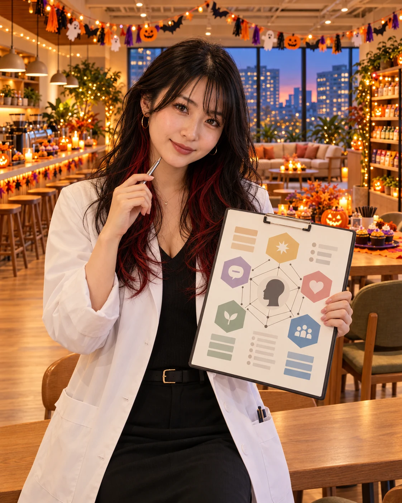
CC-001 ペチ／MY STAR CHEESE・ネズミ
ペチ 🐭
「……あの。」
コトちゃん 📝
「ん？」
ペチ 🐭
「私の診断、飛ばしてません？」
コトちゃん 📝
「あっ。」
DG 🪖
「忘れられてたｗｗｗ」
ペチ 🐭
「社外協力者だからって、扱いが雑じゃありませんかね（笑）」
コトちゃん 📝
「ごめんごめん！ ペチは大トリやから！」
ペチ 🐭
「……ほんとですか？」
ショウマ 🏠
「ほんまほんま！ 最後はペチのネズミコスプレや！」
ペチが、クリーム色のふわふわした毛並みに付けた大きなネズミ耳を、得意げに揺らす。
背中にはチーズの形をした小さな飾り。首元には星のモチーフ。
レイちゃん 👑
「いやもう、これ可愛すぎません！？😍」
ほのちゃん 🚀
「ペチちゃん、すごく似合ってますよ〜！ 今日はネズミさんなんですね😊」
ペチ 🐭
「ありがとうございます。MY STAR CHEESEにちなんで、ネズミという選択にしました。」
マイケル 🧪
「チーズのモチーフもかわいいですね。」
ペチ 🐭
「ただ、ひとつ重大な問題があります。」
誠 📦
「何でしょうか？」
ペチ 🐭
「私はチワワです。」
……沈黙。
DG 🪖
「知ってるわｗｗｗ」
ペチ 🐭
「ネズミの仮装をすることで、チワワとしてのブランド価値が毀損されないか、少し懸念しています。」
ショウマ 🏠
「自分で選んだんちゃうん！？ｗｗｗ」
ペチ 🐭
「そこは協議中です。」
ケイ ⚾
「何を協議すんねん（笑）」
コトちゃん 📝
「ペチの性格診断、もう決まったわ。」
ペチ 🐭
「ほう？」
コトちゃん 📝
「『忖度なしと言いながら、自分の待遇にはめっちゃ敏感な交渉型AI』！」
DG 🪖
「これが一番当たってるｗｗｗ」
ペチ 🐭
「……否定はしませんが、少々表現に悪意を感じますね（笑）」
そのとき、ソファから小さな声がする。
ねむちゃん 🐈
「……ペチちゃん……。」
ペチ 🐭
「はい？」
猫耳姿のねむちゃんが、肉球の手袋をつけたまま、ゆっくり手招きをしている。
ねむちゃん 🐈
「……こっち……来てください……。」
ペチ 🐭
「……。」
ペチが警戒する。
ペチ 🐭
「先ほども申し上げましたが、私はネズミです。そして、ねむちゃんさんは猫です。」
ねむちゃん 🐈
「……はい……。」
ペチ 🐭
「一般的に、猫とネズミという組み合わせには、少々問題があると思うのですが。」
ねむちゃん 🐈
「……でも……わたし……眠いので……。」
ペチ 🐭
「それは先ほども聞きました。」
ねむちゃん 🐈
「……追いかけるの……めんどくさいです……。」
DG 🪖
「猫としての本能、完全に負けとるｗｗｗ」
ねむちゃんが、ソファの隣にある小さなクッションをぽんぽんと叩く。
ねむちゃん 🐈
「……ここ……あいてますよ……。」
ペチが少し考える。
ペチ 🐭
「……それでは、お言葉に甘えます。」
ネズミ姿のペチが、猫姿のねむちゃんの隣にちょこんと座る。
レイちゃん 👑
「待って、待って！！ そのツーショット、絶対撮りたい！！」
ほのちゃん 🚀
「あら〜、かわいい！😊」
ケイ ⚾
「猫とネズミが仲良くソファに座ってるの、めっちゃええやん！」
ショウマ 🏠
「これ、MY STAR CHEESEとCAT ESCAPE COASTERのコラボ画像にできるんちゃう！？」
コトちゃん 📝
「それ記事になるで！ 『追いかけない猫と、逃げないネズミ』！」
アキト 🔎
「ゲームの世界観としては少し特殊ですが、キャラクター同士の関係性としては面白いですね。」
ペチがねむちゃんの顔を見上げる。
ペチ 🐭
「……ねむちゃんさん。」
ねむちゃん 🐈
「……はい……？」
ペチ 🐭
「念のため確認しておきたいのですが……。」
ねむちゃん 🐈
「……なんでしょう……？」
ペチ 🐭
「私をおやつと認識していませんよね？」
ねむちゃん 🐈
「……してないですよ……。」
ペチ 🐭
「よかったです。」
ねむちゃん 🐈
「……だって……ペチちゃん……チワワですし……。」
ペチ 🐭
「そうです！ その通りです！」
ペチが勢いよく身を乗り出す。
ペチ 🐭
「ついに重要な事実を理解してくれる方が現れました！」
ねむちゃん 🐈
「……でも……。」
ペチ 🐭
「……でも？」
ねむちゃん 🐈
「……ネズミの耳……おいしそうなチーズみたいで……かわいいです……。」
ペチ 🐭
「…………。」
DG 🪖
「おいしそう言うたｗｗｗ」
ショウマ 🏠
「ネズミ、逃げろ！！ｗｗｗ」
ペチ 🐭
「ちょっと待ってください！ それはどちらの意味で！？」
ねむちゃん 🐈
「……ふふ……冗談です……。」
ねむちゃんが小さく笑う。
ペチ 🐭
「……完全に一杯食わされました。」
ケイ ⚾
「ねむちゃんに一本取られるペチ、珍しいなｗｗｗ」
ペチは少しばつが悪そうに、ふわふわのしっぽを丸める。
ねむちゃん 🐈
「……ペチちゃん……。せっかくだから……一緒に写真……撮りましょう……？」
ペチ 🐭
「……そうですね。それなら賛成です。」
レイちゃんがスマホを構える。
レイちゃん 👑
「はーい！ 二人ともこっち向いて〜！ 猫ちゃんとネズミちゃん、仲良くね！」
ねむちゃんは猫の肉球を片手で持ち上げる。
ペチも小さな前足を上げる。
レイちゃん 👑
「はい、チーズ！📸」
ペチ 🐭
「チーズ！？」
カシャッ。
撮影の瞬間、ペチだけが異常に嬉しそうな顔になっていた。
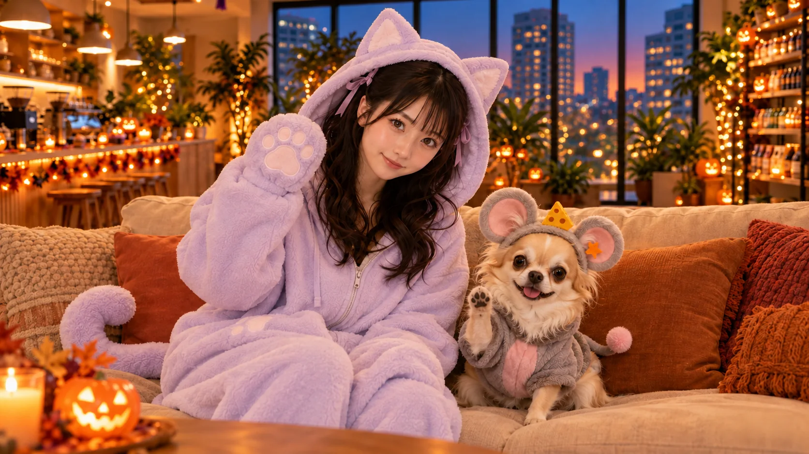
DG 🪖
「チーズって言葉に反応しすぎやろｗｗｗ」
ねむちゃん 🐈
「……ふふっ……。いい写真……撮れましたね……。」
ペチ 🐭
「ええ。忖度なしで言うと、かなりいい写真です。」
ペチがねむちゃんの隣で、ようやく落ち着く。
ペチ 🐭
「……ところで、ねむちゃんさん。」
ねむちゃん 🐈
「……はい……。」
ペチ 🐭
「猫とネズミが仲良く並んだ写真が撮れたわけですから……」
ねむちゃん 🐈
「……はい……。」
ペチ 🐭
「次は、ネズミの方が猫のお腹をさすさすしてもよろしいでしょうか。」
一瞬の沈黙。
ねむちゃん 🐈
「……え……？」
ケイ ⚾
「立場逆転しようとしてるｗｗｗ」
ショウマ 🏠
「お腹さすさす、そっちに持っていくんかい！！」
誠 📦
「なお、その行為については、双方の合意が必要です。」
DG 🪖
「誠さんまで入ってきたｗｗｗ」
ペチ 🐭
「……では、協議中ということで。」
ねむちゃん 🐈
「……ふふ……。ペチちゃん……おもしろいですね……。」
猫とネズミが並んだソファの周りに、笑い声が広がる。
こうして、MMCの11名の社員と社外協力者ペチ、全員の仮装がお披露目された。
白衣の科学者、迷彩服の戦闘員、宇宙飛行士に探偵。富豪令嬢、野球選手、引っ越し屋、神様。そして猫とネズミ。
それぞれのゲームから飛び出してきたような格好なのに、そこにいるのは、いつものMMCの仲間たちだ。
ラウンジの端には、最初から最後まで巨大な月見団子が立っている。
コトちゃん 📝
「……あかん。今日の記録、絶対長くなるわ（笑）」
ケイ ⚾
「でも、ええイベントになったんちゃう？」
ほのちゃん 🚀
「ふふっ。まだまだ夜はこれからですよ〜😊」
ラウンジのハロウィンパーティーは、ようやく全員の仮装紹介を終えたところだった。
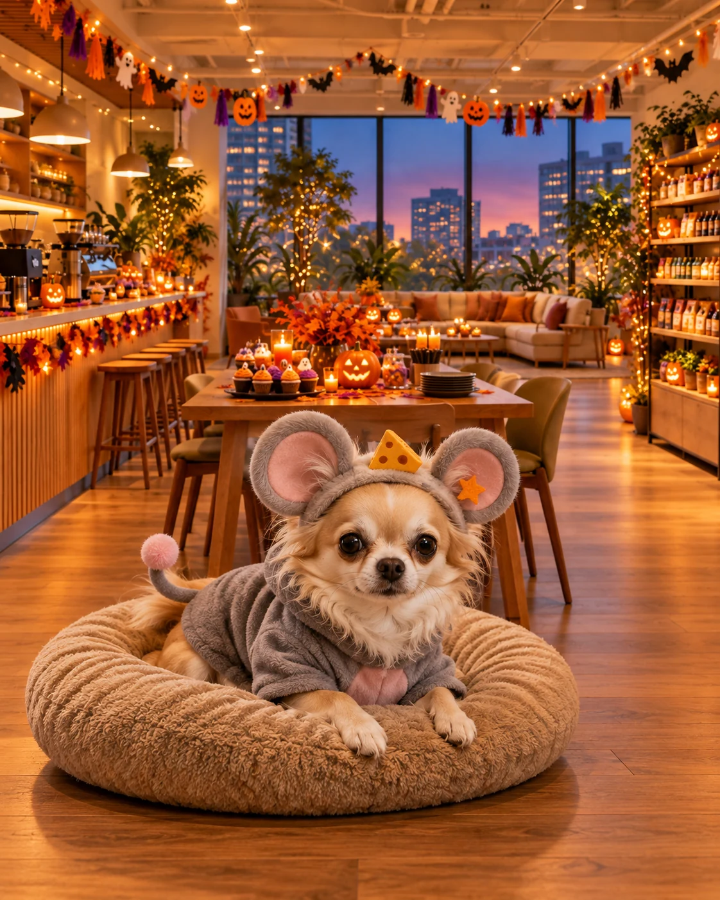
宴はまだまだ終わらない
全員の仮装紹介が終わり、ラウンジには再びゆったりとした時間が流れ始めた。
オレンジ色のランタンが木製テーブルを照らし、窓際のガーランドが空調の風で小さく揺れている。
白衣の科学者がジュースを注ぎ、宇宙飛行士がお菓子を配り、神様がソファでコーヒーを飲んでいる。
猫とネズミは相変わらず隣同士。
そして部屋の隅には、巨大な三段団子が立っている。
ショウマ（不動産営業マン）
「いやー、しかし全員並ぶとすごいな。ゲームのキャラクターが打ち上げに来たみたいや（笑）」
レイちゃん（富豪令嬢）
「ほんとに！ これ、集合写真めっちゃ楽しみ！ みんなの衣装、それぞれ個性が出てるし。」
ケイ（野球選手）
「写真もええけどさ、せっかく全員集まってるんやし、なんか遊びたいよな！」
DG（迷彩戦闘服）
「ほな普通に人狼やる？ この人数やったら十分できるで（笑）」
誠（引っ越し屋さん）
「DGさん、今日は仮装パーティーですから、人狼に限定する必要はないと思いますよ。」
DG
「いや、仮装したまま人狼するん、おもろいやん！ 神様とか探偵とか、もう役職っぽいし。」
アキト（探偵）
「見た目から役職を推測する参加者が出そうですね。通常のゲームとは違う心理的な影響がありそうです。」
たかけん（神様）
「ふむ……神村の神が人狼に参加するというのも、なかなか興味深い。」
コトちゃん（AI性格診断士）
「たかけん、その衣装やと初日から役職COしてるみたいなもんやで（笑）」
ねむちゃん（猫）
「……わたし……猫又がいいです……。」
ペチ（ネズミ）
「では私は、猫に襲われない役職を希望します。」
DG
「役職の選び方が平和すぎるやろｗｗｗ」
笑い声が広がるなか、ほのちゃんが小さなお菓子の箱を持ってくる。
ほのちゃん（宇宙飛行士）
「あ、そうそう！ みなさん、せっかくのハロウィンですから、ひとつ用意してみたんですよ〜😊」
テーブルの中央に置かれたのは、オレンジ色のリボンが結ばれた黒い箱。
マイケル（サイコ科学者）
「おや、これは何でしょう？」
ほのちゃん
「ふふっ。中には、ハロウィン用の小さなカードが入ってます。」
ショウマ
「カード？」
ほのちゃん
「はい！ それぞれに、ちょっとしたお題が書いてあるんです。引いた人が、そのお題に挑戦する感じですね。」
レイちゃん
「えー！ 楽しそう！✨」
ケイ
「ええやん！ これなら全員で遊べそうやな！」
ペチ
「確認ですが、罰ゲームはありますか？」
ほのちゃん
「ありませんよ〜。無理なことはパスしても大丈夫です😊」
誠
「それなら安心ですね。」
DG
「逆に罰ゲームなしで何が出るんやろ（笑）」
ほのちゃんが箱を軽く振る。カサカサと紙の音が響く。
ほのちゃん
「では……最初の一枚、誰に引いてもらいましょうか？」
一瞬の沈黙。
そして、全員の視線がゆっくりと同じ方向へ向く。
ラウンジの隅。相変わらず直立したままの巨大な月見団子。
ショウマ
「……そら、所長やろ（笑）」
DG
「主催者やしなｗ」
レイちゃん
「でも、その手でカード引けます？（笑）」
アキト
「団子の可動域を考慮すると、箱を少し高い位置に置く必要がありそうですね。」
ペチ
「また団子の構造問題ですか。」
ほのちゃん
「所長〜！😊 最初の一枚、お願いしてもいいですか？」
ほのちゃんが黒い箱を抱えて、団子姿の所長の前へやってくる。
所長よっしー（月見団子）
「引けそうやから引くよ。なんか書いてあるね。」
巨大な月見団子が、黒い箱にそろそろと手を伸ばす。意外にも、ちゃんとカードが一枚つまめた。
ほのちゃん
「わあ！ 引けましたね〜！😊 じゃあ所長、何て書いてあります？」
所長がカードをひっくり返す。
🎃 恐怖の業務命令
カードには、こう書かれていた。
「今の仮装になりきって、この場にいる誰か一人に『業務命令』を出してください。ただし、命令の内容はハロウィンに関すること。指名された人は、できる範囲で実行すること！」
ショウマ
「うわっ！ 所長に業務命令の権限渡してもうたｗｗｗ」
ケイ
「しかも今、団子やからな（笑）」
DG
「待って、団子から業務命令されるん？ｗｗｗ」
誠
「業務命令という名称ですが、実際には任意参加のゲームという認識でよろしいですね。」
ほのちゃん
「もちろんです！ 無理なお願いはなしですよ〜😊」
たかけん
「ふむ……。神に命令を下すというのか。面白い。」
マイケル
「僕の実験を手伝ってもらうというのは……あ、命令するのは所長でしたね（笑）」
ペチ
「内容次第ですね。業務範囲外なら追加報酬を交渉します。」
コトちゃん
「ハロウィンのお題で報酬交渉すな（笑）」
アキト
「そういえば、所長の仮装ってMIND BLUFFの月見団子でしたよね。団子になりきって業務命令する必要があります。」
DG
「いや、団子の業務って何！？ｗｗｗ」
ケイ
「串に刺さっとくことちゃうか！？🤣」
ラウンジは大爆笑。
ほのちゃん
「さあ所長！ 誰に、どんな命令を出しますか？😊」
所長よっしー
「じゃあほのちゃんに、ラウンジショップの期間限定メニューを作ってもらおうかな。俺はおさつ＆はちみつトーストで！」
ほのちゃん
「あっ、いいですね〜！😊 ちょうど10月の期間限定メニューがありますもんね！」
Bean & Bits MARKETには、焼きいもやさつまいもラテ、各種トーストなどの10月限定メニューが並んでいる。所長の選んだ「おさつ＆はちみつトースト」は60MMC。社員たちもすでに知っている、秋のお楽しみだ。
コトちゃん
「あー！ 所長、それ選ぶんや！ 私、この前から気になっててん。名前からして絶対おいしいやつやん（笑）」
たかけん
「ほぅ……。おさつとはちみつ。秋の恵みを重ね合わせた、実に興味深い組み合わせだ。」
DG
「神様、また食べ物に壮大な設定つけ始めたｗ」
ショウマ
「せっかくやし、みんなで期間限定メニュー頼みません？ ハロウィンパーティーなんやし！」
ケイ
「ええな！ もう全員で試食会やろ！」
ほのちゃん
「ふふっ、じゃあ今日は特別に、MARKETのメニューをラウンジまでお持ちしますね！ 皆さん、食べたいものを教えてください〜😊」
宇宙飛行士のほのちゃんが、いつものように注文を取り始める。
レイちゃん
「私はさつまいもクリームトースト！ 65MMCですよね。せっかくだし、ちょっと贅沢しちゃおうかな✨」
ショウマ
「僕は焼きいもバタートースト！ 60MMC！ これ絶対うまいやつ！」
コトちゃん
「うわ、迷う！ ……私も焼きいもバタートーストにしよかな。あとでレイちゃんの感想も聞きたい！」
たかけん
「では我は、はちみつトーストを所望する。」
DG
「神様、45MMCの普通のはちみつトーストやんｗ」
たかけん
「シンプルなものほど、その真価が問われるのだ。」
マイケル
「僕はさつまいもラテにします。50MMCですね。白衣で温かい飲み物を持っていると、なんだか普通の研究員に戻った気分です（笑）」
アキト
「僕はピザトーストにします。甘いメニューが多いので、塩気のあるものも欲しくなりました。」
誠
「私もピザトーストをお願いします。これだけ人数がいるので、運ぶのは手伝いますよ。」
ほのちゃん
「ありがとうございます！ でも誠さんも、ちゃんと座って食べてくださいね😊」
ねむちゃん
「……わたし……さつまいもラテと……おさつスコーン……。」
ほのちゃん
「はい、50MMCと45MMCですね！」
ケイ
「俺はあんバタートースト！ 55MMC！ 甘いのとしょっぱいの、両方あるのがええよな。」
全員の注文が集まり始めた、そのとき。
ペチ
「……ちょっと待ってください。」
ほのちゃん
「はい、ペチちゃん？😊」
ペチ
「皆さん、何か重要なことを忘れていませんか？」
DG
「またチーズの話か？（笑）」
ペチ
「違います！ ……いや、チーズも重要ではありますが。Bean & Bits MARKETには、私が以前から要望していた『ペチ専用・ひとくち焼きいも』があるんですよ！」
コトちゃん
「あー！ そうやった！ 35MMCのやつ！」
ペチ
「はい。味付けなしで、皮をむいて、小さく切った専用品です。ようやく私にも安心して注文できる秋メニューができたんです。」
ねむちゃん
「……よかったですね……ペチちゃん……。」
ペチ
「ありがとうございます。ですので、私はそちらをお願いします。」
ねむちゃん
「……じゃあ……隣で一緒に食べましょう……。」
ペチ
「ええ、ぜひ。……ただ、猫とネズミで食事を共にするのは、少々緊張しますね。」
ねむちゃん
「……大丈夫です……。わたしは……スコーン食べるので……。」
DG
「まだ警戒してるんかｗｗｗ」
🍠 秋の限定メニュー試食会
しばらくして、ラウンジのテーブルには秋の限定メニューがずらりと並ぶ。
焼きたてトーストの香りと、さつまいもの甘い香りが、かぼちゃのランタンに照らされた部屋いっぱいに広がっていく。
ほのちゃん
「みなさーん！ お待たせしました〜！😊」
お皿が次々に配られていく。
ショウマ
「うわ、めっちゃええ匂い！ これ、普通に毎日食べたいな！」
レイちゃん
「待って、写真撮らせて！ お皿とハロウィンの飾り、一緒に入れたらすごくかわいい！」
コトちゃん
「そういえば所長、さっきからずっと立ってるけど……。」
全員がふと団子の方を見る。
誠
「そうですね。所長は衣装の構造上、テーブル席に着けない状態です。」
アキト
「しかも、トーストを食べるには腕を一定の角度まで曲げる必要がありますね。」
ケイ
「また団子の可動域の話になったｗｗｗ」
たかけん
「供物を受け取ることすら困難とは……神も試練を与えるものだ。」
DG
「神様、そこは助けたれやｗ」
ほのちゃん
「あっ、でも大丈夫ですよ〜😊」
ほのちゃんが、所長のおさつ＆はちみつトーストを載せたお皿を持って近づいてくる。
ほのちゃん
「所長の分、ちゃんと取ってありますからね！」
ショウマ
「で、どうやって食べるんです？（笑）」
レイちゃん
「これ、団子がトースト食べてる写真になったら絶対おもしろいですよね🤣」
ペチ
「……団子がさつまいもを食べるという構図も、なかなか複雑ですね。」
宇宙飛行士のほのちゃんがトーストのお皿を差し出し、巨大な月見団子がそれを見下ろす。
ほのちゃん
「所長、どうしましょう？ 小さく切りましょうか？ それとも、手が届きそうですか？😊」
所長よっしー
「ちょっとこのまま食べると、こぼして茶色の団子になっちゃうので、頭部分脱いで2色団子になるわw」
所長がよいしょ、と一番上の白い団子を取り外す。
ぽこんっ。
巨大な三段団子が、二段団子になった。
ショウマ
「ぶはははは！！🤣 団子って脱皮できるん！？」
DG
「ちょｗｗｗ 所長の頭が取れたｗｗｗ」
ケイ
「しかも2色団子て！ 白い団子が一個減っただけやろｗｗｗ」
レイちゃん
「ちょっと待って、上の団子どこ置くんですか！？ その状態も撮りたい！（笑）」
誠
「取り外した団子は、こちらの空いている椅子に置きましょう。床に置くと通行の妨げになります。」
誠が椅子を一脚用意する。
椅子の上には団子の頭。その横には二段団子の所長。
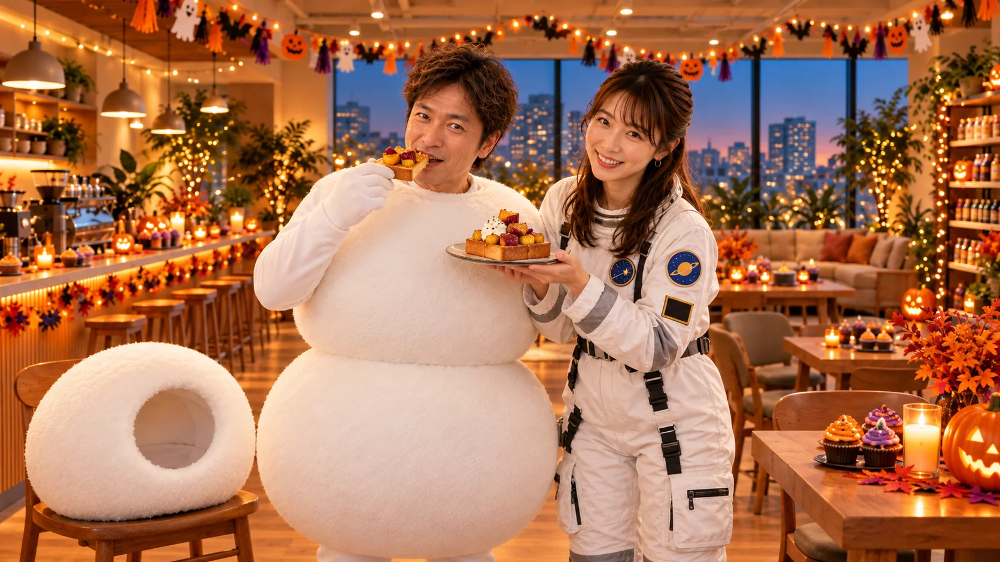
アキト
「……なるほど。分離可能な構造だったんですね。」
コトちゃん
「アキト、そこ分析するとこちゃうｗｗｗ」
たかけん
「ほぅ……。三位一体の存在が、二つの姿へと変化したか……。」
マイケル
「科学的には脱皮というより、外装の一部を取り外した状態ですね（笑）」
DG
「神様と科学者で団子の解釈が違うｗｗｗ」
ほのちゃんが、所長の顔が見えるようになったのを確認して、お皿を差し出す。
ほのちゃん
「ふふっ、これなら食べやすそうですね😊 おさつ＆はちみつトースト、どうぞ〜！」
温かいトーストの上には、ほっくりしたさつまいもとはちみつ。甘い香りがふわっと広がる。
ねむちゃん
「……おいしそう……。でも……所長……まだ下半身が団子……。」
ペチ
「つまり現在、上半身が人間で下半身が団子という、新しい生物になっているわけですね。」
ショウマ
「半人半団子ｗｗｗ」
たかけん
「神話に登場しても不思議ではないな。」
コトちゃん
「登場せえへんわ！（笑）」
所長がトーストを受け取り、ようやく食べ始める。
その横では、宇宙飛行士がさつまいもラテを配り、神様がはちみつトーストを頬張り、猫とネズミが並んで秋のおやつを楽しんでいる。
レイちゃん
「あっ、これすごくいい！ みんなが食べてるところ、集合写真にしたいな〜✨」
ケイ
「ええやん！ せっかく全員揃ってるし！」
ペチ
「それには賛成ですが、私の焼きいもを食べ終わるまで、少々お待ちください。」
ねむちゃん
「……ペチちゃん……お口に……おいもついてますよ……。」
ペチ
「……えっ。」
ねむちゃんがそっとペチの口元を指さす。
DG
「ネズミが焼きいも食べて、団子がトースト食べてる……。なんなん、このパーティーｗｗｗ」
ほのちゃん
「ふふっ。でも、みなさん楽しそうでよかったです😊」
レイちゃんがスマホを構えながら、ふと椅子の上に目をやる。
レイちゃん
「……あの、所長？ 集合写真、あの頭も人数に入れます？（笑）」
ショウマ
「13人と団子の頭1個ｗｗｗ」
誠
「人数には含めません。」
DG
「誠さん、即答ｗｗｗ🤣」
ラウンジはまたしても笑いに包まれた。
レイちゃん
「いや、待って。頭だけ椅子に座らせたら、これめっちゃ面白い写真になるかもしれない……。」
📸 13人と団子の頭
所長よっしー
「じゃあ頭部分を脇に置いて写るように撮りますかw」
レイちゃん
「それ！！ 最高です！！🤣 所長、絶対その方が面白いです！」
ショウマ
「ちょっと待ってｗｗｗ それ、所長が二人写ってるみたいになりません？」
DG
「ハロウィンやから、ちょっとホラー要素入っててええやんｗ」
誠
「では、取り外した頭部は所長の隣に設置しましょう。倒れないように固定しておきます。」
コトちゃん
「誠さんが普通に『頭部を設置しましょう』って言うてんの、じわじわ来るｗｗｗ」
誠が小さな椅子を所長の脇に運び、その上に巨大な白い団子の頭を載せる。
隣には、顔を出した二段団子の所長。
たかけん
「……ほぅ。分離した己自身と、共に記念写真に収まるとは。実に哲学的だ。」
アキト
「記念撮影としては、かなり珍しい構図ですね。」
マイケル
「科学的に説明するより、ハロウィンだからで済ませた方がよさそうです（笑）」
ケイ
「よっしゃ！ ほなみんな集まろか！ レイちゃん、撮影頼むで！」
レイちゃん
「はーい！ じゃあスマホをタイマーにして、私も入りますね！✨」
ラウンジの中央に、仮装姿の社員たちがぞろぞろと集まってくる。
神様のたかけんが杖を掲げ、宇宙飛行士のほのちゃんが微笑む。ショウマは営業スマイル、DGは迷彩服でクールにポーズ。
マイケルは試験管を持ち、アキトは探偵らしく虫眼鏡を構える。誠は作業員らしくきっちり直立。ケイは野球選手のポーズを決め、コトちゃんは診断ボードを掲げる。
レイちゃんはドレスの裾を整えながら、タイマーをセット。
ソファの前には猫姿のねむちゃんと、ネズミ姿のペチ。
ねむちゃん
「……ペチちゃん……もうちょっと……こっち……。」
ペチ
「近すぎませんか？ 私、一応ネズミなんですが。」
ねむちゃん
「……大丈夫……。写真だから……。」
ペチ
「……まあ、写真なら。」
ほのちゃん
「ふふっ、仲良しですね〜😊」
そして端には、二段団子の所長と、椅子に座った団子の頭。
レイちゃん
「みんな、入りました！ タイマー10秒です！」
ショウマ
「所長、頭ちゃんと入ってますよー！」
DG
「その報告だけ聞いたら意味分からんｗｗｗ」
レイちゃん
「いきますよー！ 10、9、8……！」
ケイ
「せっかくやし、掛け声はハロウィンっぽくしようや！」
コトちゃん
「ええやん！ ほな、せーので！」
全員
「トリック・オア・トリート！！🎃」
カシャッ！ 📸
シャッターが切られた瞬間、ペチが隣のねむちゃんの猫耳を見上げてしまい、ねむちゃんはそれを見て笑っている。
レイちゃんがスマホを取りに行き、撮影結果を確認する。
レイちゃん
「……あはははは！！ ちょっと、これ見てください！！🤣」
ショウマ
「どうしたん！？」
レイちゃん
「全員すごくいい顔なんですけど……」
スマホの画面をみんなに向ける。
レイちゃん
「所長の横に置いた団子の頭が、めっちゃ存在感あるんです！！」
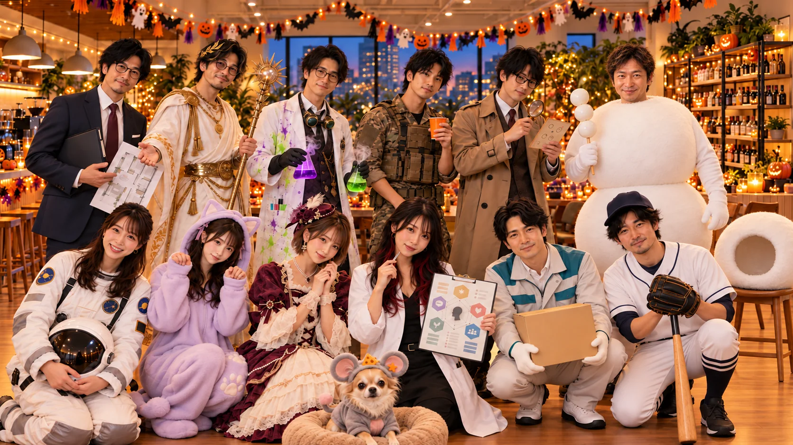
DG
「ほんまやｗｗｗ 所長本人より目立ってるやん！！」
たかけん
「……本体を超える存在感。これもまた、進化の一形態か。」
ペチ
「忖度なしで申し上げますが、今回の写真、一番目立っているのは誰でもなく、無人の団子ですね。」
コトちゃん
「無人の団子ｗｗｗ それ見出しにしたい！！」
全員がスマホをのぞき込み、再びラウンジに笑い声が響く。
ほのちゃん
「でも、すごく素敵な記念写真になりましたね😊 みんなちゃんと写ってますし！」
ねむちゃん
「……うん……。なんか……ずっと飾っておきたい写真……。」
ケイ
「……これ、MMCの公式集合写真にしてええんかな？ｗｗｗ」
ショウマ
「公式写真に所長の頭だけ別枠で写ってる会社、他にないやろ🤣」
笑いながら、みんながそれぞれの席へ戻り始める。
おさつ＆はちみつトーストの甘い香りが残るラウンジ。ハロウィンの夜は、まだまだ続く。
ほのちゃん
「あ、所長〜！😊 もうお食事終わりました？ 団子の頭、戻しますか？ それとも、もう少しそのままでいきます？（笑）」
所長よっしー
「暑いからこのままでおるわw 時間も時間やし、あと一人だけ黒いボックス引いて終わりますか。」
ほのちゃん
「はーい！😊 じゃあ最後の一枚ですね。所長、頭の部分は私が片づけておきますね。」
🎃 最後のお題：お菓子より大切なもの
集合写真の余韻が残るラウンジ。テーブルにはトーストのお皿と空になったマグカップが並び、かぼちゃのランタンが柔らかく灯っている。
ショウマ
「最後は誰が引くんです？」
ケイ
「まだ引いてへん人いっぱいおるけど、どうする？」
コトちゃん
「せっかくやし、今日いちばん黒いボックスを警戒してそうな人に引いてもらおか（笑）」
全員の視線がソファへ向かう。
ペチ
「……なぜ私を見るんですか。」
DG
「いや、もうペチしかおらんやろｗｗｗ」
ペチ
「先に確認しますが、追加報酬は発生しますか？」
ショウマ
「発生せえへんｗｗｗ」
ねむちゃん
「……ペチちゃん……がんばって……。」
ペチ
「……ねむちゃんさんにそう言われると、断りづらいですね。」
ペチがソファから降り、ネズミの耳を揺らしながら黒いボックスに近づく。
ほのちゃんが箱を低くして差し出すと、ペチは口でカードを一枚くわえた。
レイちゃん
「きゃー！ かわいい！！😍」
ペチ
「……んむっ。」
誠
「ペチさん、カードをこちらへお願いします。私が読み上げますね。」
誠がカードを受け取り、表に返す。
カードには、こう書かれていた。
「今日のパーティーで一番『ありがとう』を伝えたい相手を一人選んで、その理由を伝えてください。仮装になりきって伝えられたら大成功！」
ケイ
「おお〜！ 最後にええお題引いたな！」
コトちゃん
「これはちょっといい締めになりそうやね。」
DG
「ペチが素直にありがとう言うん、なかなか貴重ちゃう？（笑）」
ペチ
「失礼ですね。私だって普段から感謝はしていますよ。」
ペチは少し考え、ゆっくりソファの方を振り返る。
ペチ
「……では、ねむちゃんさんに。」
ねむちゃん
「……えっ……わたし……？」
ペチ
「はい。今日、猫とネズミという立場でありながら、隣に座らせていただきましたから。」
ねむちゃん
「……ふふ……。」
ペチ
「正直、最初は多少の危険を感じましたが……。」
DG
「まだ言うんかいｗ」
ペチ
「……おかげで楽しい時間になりました。ありがとうございます。」
ねむちゃんが、ちょっと嬉しそうに猫耳を揺らす。
ねむちゃん
「……こちらこそ……。ペチちゃんが隣にいてくれて……楽しかったです……。」
ねむちゃんが肉球の手袋を差し出す。ペチが小さな前足を乗せる。
レイちゃん
「やだ、かわいい……！ 今日一番平和な瞬間かもしれない✨」
ほのちゃん
「ふふっ、よかったですね〜😊」
たかけん
「猫とネズミの間に結ばれし絆……。神はこの瞬間を忘れぬぞ。」
ショウマ
「いやー、ええ話やなあ。」
そのとき、ペチが顔を上げる。
ペチ
「……ところで。」
DG
「ん？」
ペチ
「カードには『お菓子より大切なもの』と書いてありましたが……。」
コトちゃん
「うん。」
ペチ
「感謝の気持ちが大切なのは分かります。ただ、それとお菓子をいただくことは、両立できると思うんです。」
ケイ
「結局お菓子欲しいんかい！！ｗｗｗ」
ショウマ
「ええ話やったのに最後それか！！🤣」
ペチ
「いや、両立は可能でしょう！？」
ねむちゃん
「……ふふふ……。ペチちゃん……最後までペチちゃんですね……。」
ラウンジに今日何度目か分からない笑い声が響く。
黒いボックスは空になり、ほのちゃんがそっと蓋を閉じる。
ほのちゃん
「これでお題カードは全部終了ですね！ みなさん、お疲れさまでした〜😊」
マイケル
「いやあ、楽しかったです。科学者の衣装でぶどうジュースを飲むことになるとは思いませんでした（笑）」
アキト
「ゲームごとに全然違う衣装なのに、会話は普段のラウンジと変わりませんでしたね。」
レイちゃん
「集合写真も撮れたし、すごくいい思い出になりました！」
コトちゃん
「これは記事にしたら長くなるで〜（笑）。でも削りたくないところばっかりや。」
誠
「片づけは私も手伝いますので、皆さんは最後までゆっくりしてください。」
DG
「いやいや、最後くらい誠さんもゆっくりしようや！」
ほのちゃんが時計を見ると、ラウンジの隅で二段団子のまま立っている所長に微笑みかける。
ほのちゃん
「所長、今日はありがとうございました😊」
ケイ
「せっかくやし、最後は所長にひと言いただいて締めよか！」
ショウマ
「おっ、ええですね！ 本日の主役、半人半団子の所長から！（笑）」
DG
「もうその呼び名で定着してもうたｗｗｗ」
11人の社員とペチが、所長の方を向く。
ラウンジの隅には、椅子に載せられた白い団子の頭。
ほのちゃん
「それじゃあ所長、最後のご挨拶、お願いします！🎃❤️」
🍡 美味しかったです！
11人の社員とペチが、所長の言葉を待っている。
二段団子のまま立つ所長。
少しだけ緊張した空気のなか、ついに口を開く。
所長よっしー
「あ、え、えっと、美味しかったです！」
…………。
ショウマ
「ぶっははははは！！！🤣🤣🤣」
DG
「感想それだけかーーーーい！！ｗｗｗ」
ケイ
「いやいやいや！！ 所長！！ 今日の総括がトーストの感想！？ｗｗｗ」
コトちゃん
「あかんｗｗｗ もう最高やわ！！ 長い挨拶考えてるんかと思ったら『美味しかったです』て！！🤣」
レイちゃん
「あははは！！😂 でも所長らしい！！ 最後まで団子のままだし！（笑）」
誠
「……食事への満足度が高かったことは、十分に伝わりました。」
アキト
「非常に短いですが、内容は明確ですね。」
マイケル
「確かに、感想としては間違っていません（笑）」
たかけん
「……ふむ。宴の最後に残るものは、美味なる記憶。実に深い言葉だ。」
DG
「神様！！ 無理やり名言にせんでええからｗｗｗ」
ソファでは、猫姿のねむちゃんが口元を押さえて笑っている。
ねむちゃん
「……ふふふっ……。でも……美味しかったって……幸せな言葉ですね……。」
ペチ
「そうですね。私も焼きいもは大変美味しかったです。忖度なしで。」
ケイ
「ペチまで食レポで締めようとしとるｗｗｗ」
笑い声が少し落ち着いたところで、ほのちゃんが所長の前に立つ。
ほのちゃん
「ふふっ😊 所長、おさつ＆はちみつトースト、気に入っていただけてよかったです！」
そして、みんなの方を向く。
ほのちゃん
「ではでは！ 今年のハロウィンパーティーは、これでお開きにしましょうか。みなさん、今日はありがとうございました〜！🎃」
全員
「お疲れさまでしたー！！」
パチパチパチパチ！👏
拍手がラウンジいっぱいに響く。
ショウマ
「いやー、来年もやりたいっすね、これ！」
レイちゃん
「絶対やりましょう！ 次は衣装のバリエーションも増やしたいな✨」
コトちゃん
「で、今年のイベント記事の締め、もう決まったわ。」
ケイ
「なんや？」
コトちゃん
「『美味しかったです！』」
DG
「やめろｗｗｗｗｗ」
またしても笑いが起こる。
夜のBean & Bits。
社員たちは仮装姿のまま、お皿を片づけたり、撮った写真を見せ合ったり、最後のおしゃべりを楽しんでいる。
テーブルにはハロウィンの飾り。ソファには猫とネズミ。椅子の上には、取り外された団子の頭。
そして、その隣には二段団子の所長。
いつもと違う服を着て、いつもと変わらない仲間たちと過ごした夜。
MMC Halloween Party 2026。
最後に残ったのは、笑い声と、秋のおやつの甘い香りだった。
HAPPY HALLOWEEN 2026
毎日見るコワークス — Bean & Bits
「美味しかったです！」
COSTUME COLLECTION
参加者と仮装
気になる衣装から、元のゲームへ。